===
参照图片（图片的红圈就是要点击的点），按照文字操作。文字和图片都可以双指缩放。遇到问题和我说第几步出错并截图就可以了。
图片是白底的，文字是黄色底色，参照文字操作，不要被图片给误导了，不要点击图片上的链接。
===
第1步：使用浏览器打开本网页（如果是直接将网址复制到浏览器中打开，则忽略本步骤）
点击微信右上角的“...”，然后选择“在浏览器打开”（图标是一个蓝色的球），然后点击“浏览器”（图标整体是蓝色底色，上面有个白色的球）
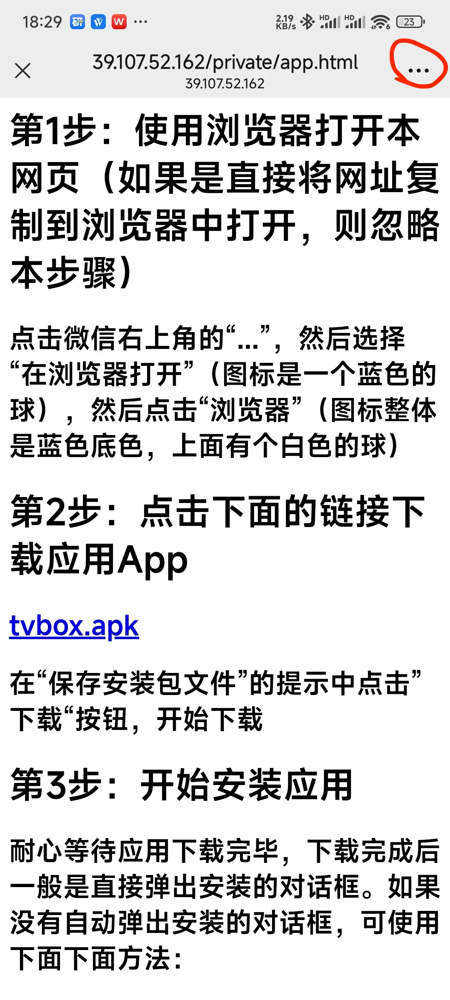
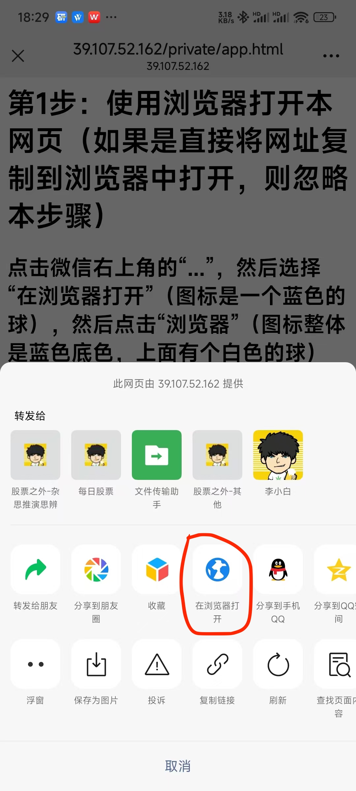

第2步：点击下面的链接下载应用App
在“保存安装包文件”的提示中点击“下载”按钮，开始下载
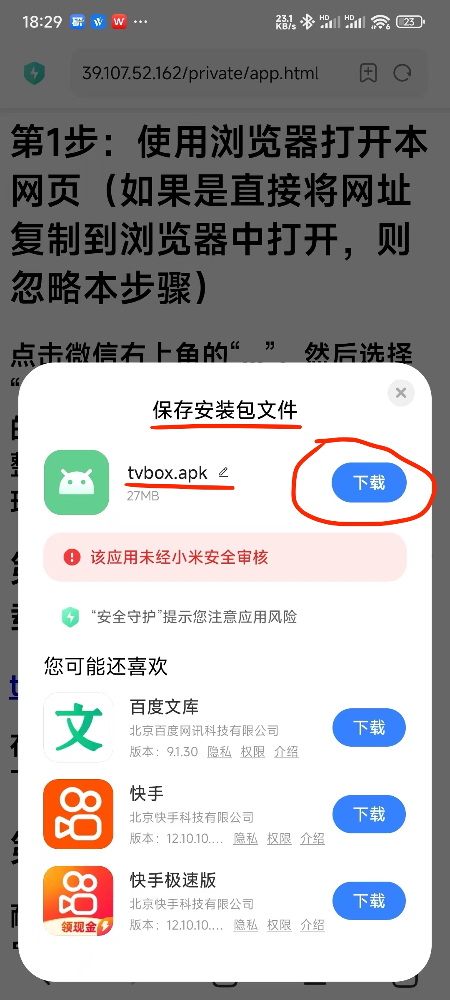
第3步：开始安装应用
耐心等待应用下载完毕，下载完成后一般是直接弹出安装的对话框。如果没有自动弹出安装的对话框，可使用下面下面方法：
方法一：可以在手机通知栏里看到有通知提示：“tvbox.apk”“下载完成”，点击该通知应该开始安装应用。
方法二：点击浏览器的下面的三横杠按钮”三“，点击”我的下载“，在”已下载“列表中点击tvbox.app右侧的”打开“按钮。
第4步：安装应用的过程
看到提示框“未查询到此应用的ICP备案信息”，点击下面的“继续安装”按钮。
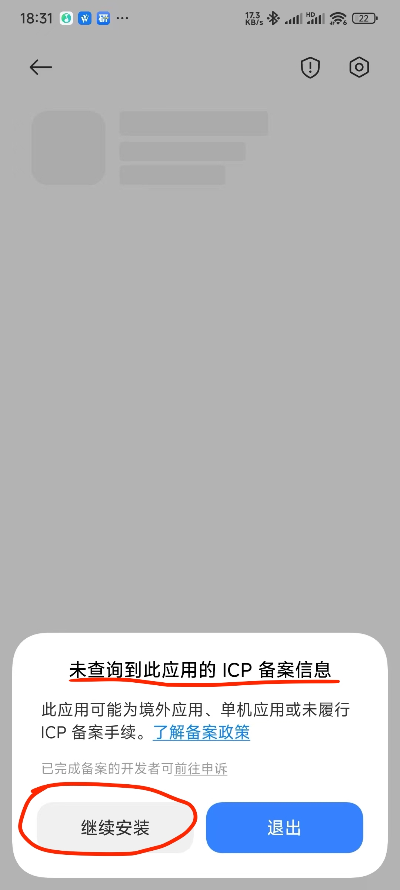
看到提示“发现风险”、“该应用未通过小米安全审核”，点击勾选下方的“已了解此应用存在高风险”，然后再点击“继续安装”按钮。
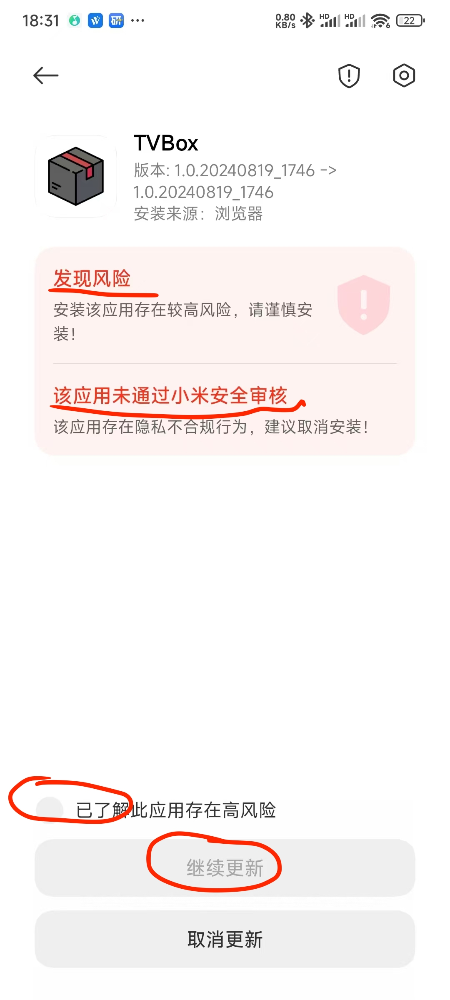
看到提示“请验证身份确认安装”，输入锁屏密码或者锁屏解锁手势。
等待安装完成之后，点击下方的“完成”按钮。
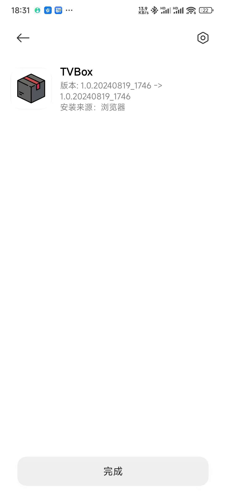
如果看到下面图片的有“增强防护”的提示，就点击右上角的三个点，然后选择“单次安装授权”
第5步：复制视频源地址
点击下面的红色文字就可以复制它：（遇到对话框“读取或写入剪切板”时，点击“允许”按钮）
http://39.107.52.162/private/tv.json
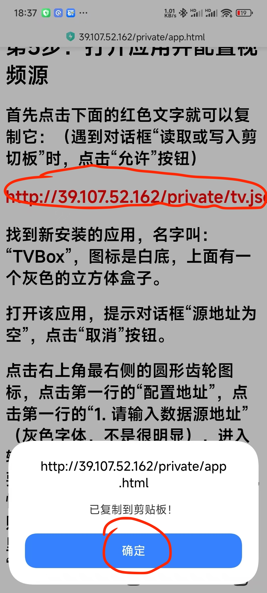
第6步：点击桌面键，打开应用并配置视频源
在手机桌面找到新安装的应用，名字叫：“TVBox”，图标是白底，上面有一个灰色的立方体盒子。
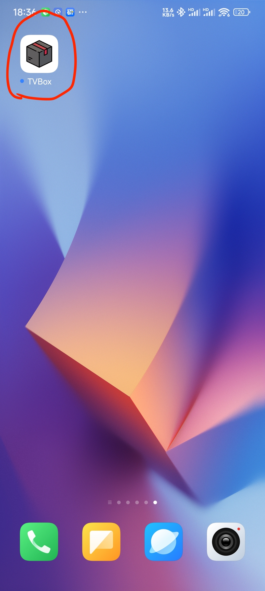
打开该应用，提示对话框“源地址为空”，点击“取消”按钮。
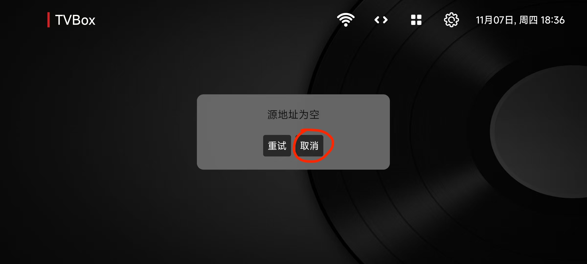
点击右上角最右侧的圆形齿轮图标，点击第一行的“配置地址”，点击第一行的“1. 请输入数据源地址”（灰色字体，不是很明显），进入输入界面。在输入界面用手指按住要输入的地方2秒后再松手，会出现快捷菜单，选择快捷菜单里的“粘贴”，将刚才复制的内容粘贴到这里。然后，点击“下一步”，再点击“下一步”，再点击“下一步”，点击“完成”按钮。然后点击右下角的“确定”按钮。
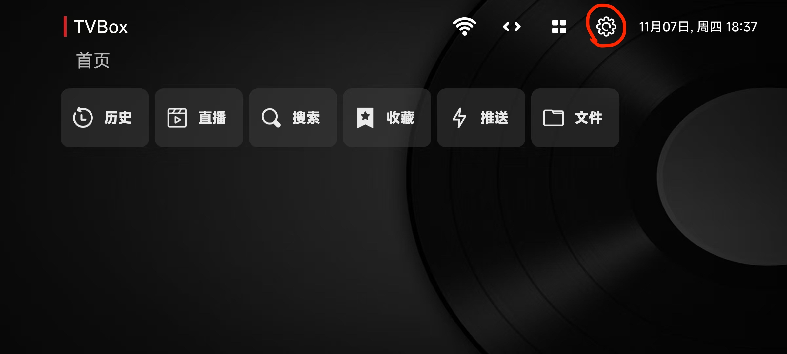
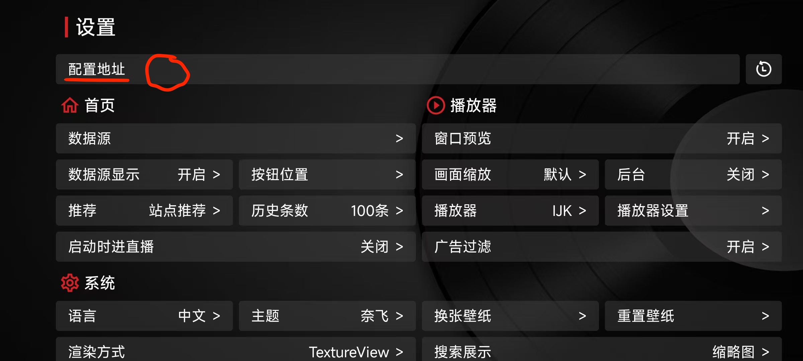
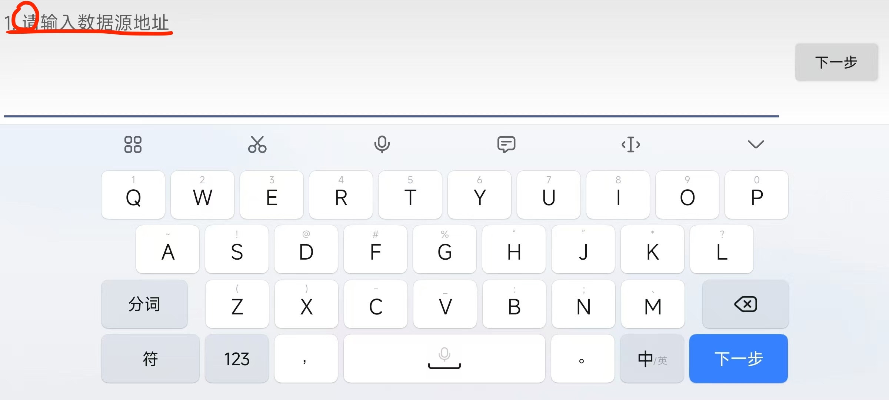
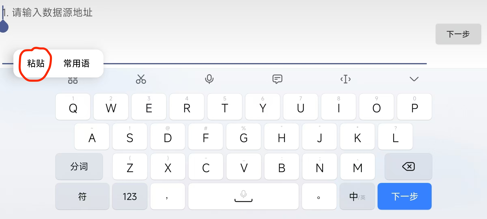
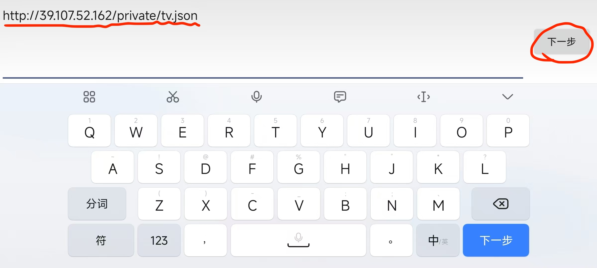
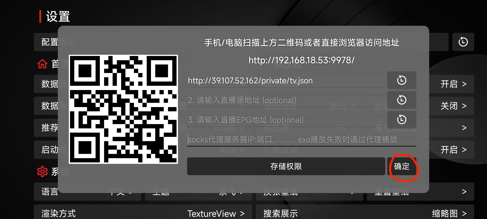
再次点击第一行的“配置地址”，然后点击下方的“存储权限按钮”，在新界面中点击“授予管理所有文件的权限”来打开该选项，然后点击“返回”。然后点击右下角的“确定”按钮。
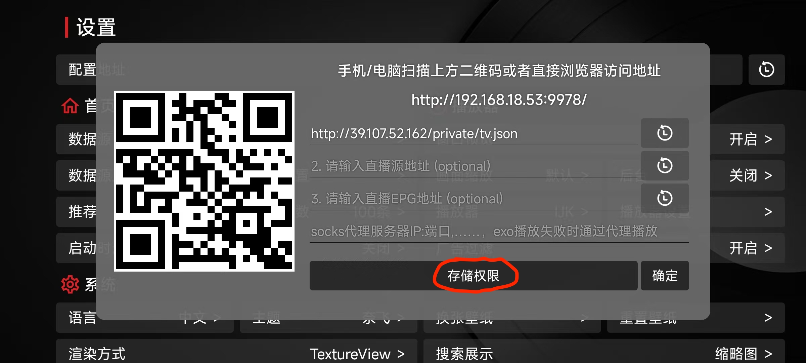
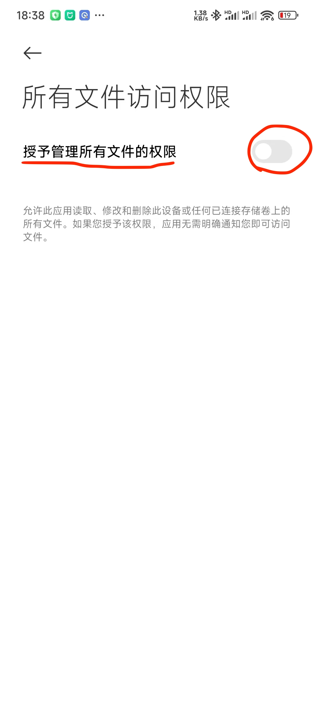

退出应用后，重新打开应用，即可使用。
第7步：使用应用
打开应用后，等待应用加载内容，首次使用可能需要一会儿时间，如果两三分钟都没有加载完成，就直接退出然后重新打开应用。
进入应用后的首页显示的是热门推荐，上方有“热播剧集”、“热播综艺”等，点击后可以看相应的节目列表。
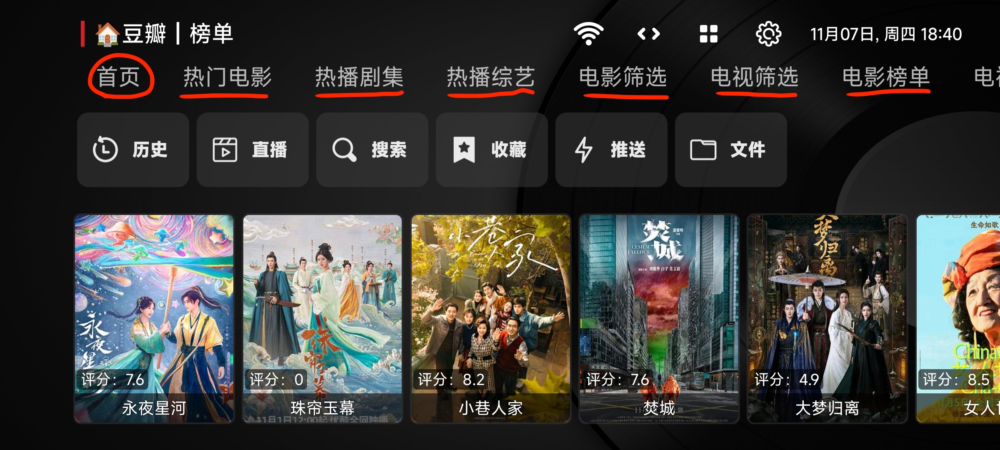
在应用首页的下方有一排按钮是最重要的：
历史：是查看自己之前看过的节目。
直播：点击后进入电视直播频道，可以看央视和各种卫视的电视直播，点击屏幕左侧可以查看节目单，选择不同的电视频道，点按2次退出按钮后退出。
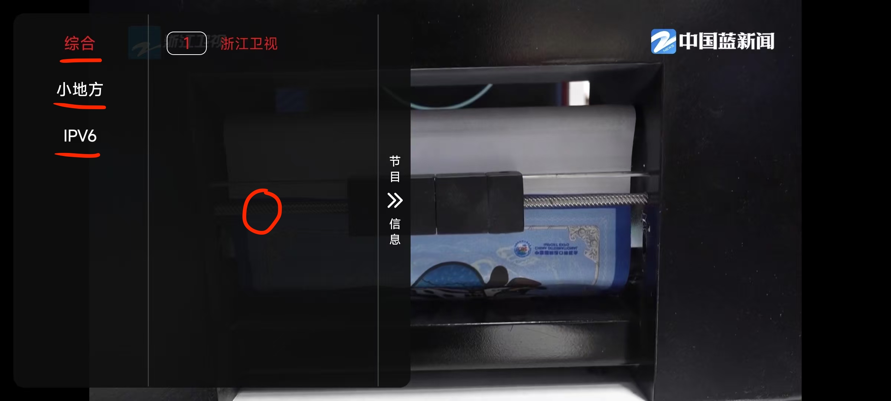
搜索：是最常用的按钮！在搜索界面输入要所搜索节目的首字母就可以搜索出节目，例如：搜索唐朝诡事录就输入“TCGSL”，然后点击右侧提示的“唐朝诡事录”进行搜索，在右侧上下滑动查看搜索结果。搜索是持续进行的，多等待一会儿可以看到更多搜索结果。点击某个结果可以查看节目，如果加载慢等，可以换另一个搜索结果看，不同的搜索结果就好像是不同的电影院，虽然都放同一个电影，可有些搜索结果代表的电影院水平不行，会出现看不了或者看着卡顿的问题。之后再查看这个节目时，不要再次搜索，而是去“历史”里寻找上次觉得看起来还比较快的那个，继续观看，那个还可以记录你上次看到哪里，继续播放下一个。
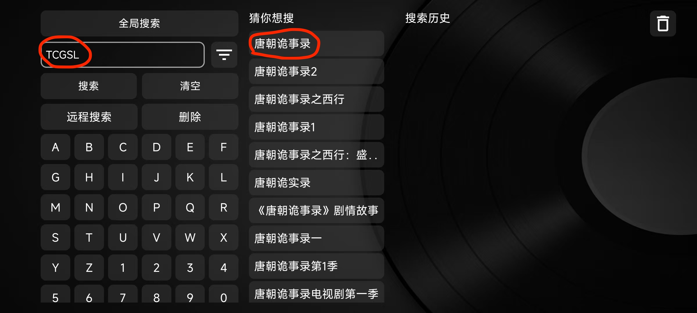
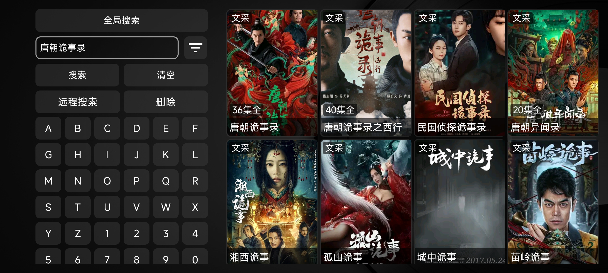
收藏：查看已经收藏的节目。如果一个节目看着不卡顿，速度比较快，可以在这个节目的节目点击“收藏”按钮，就会加到这里，方便以后查看。
推送、文件这2个一般用不到。
节目的详情界面：最常用的是“快搜”按钮，在节目播放有问题或者卡顿时，点击它可以快速搜索其他来源的节目。如果当前播放比较快速，可以点击“收藏”按钮将它收藏下来，以后就看这个。点击播放小窗可以全屏播放。“倒序”按钮是让节目集从最后一集往前排列。
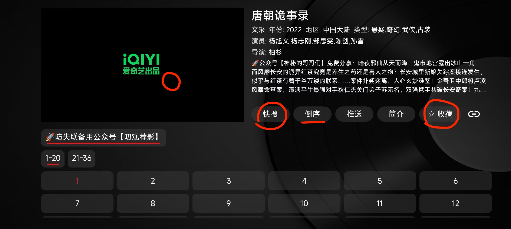
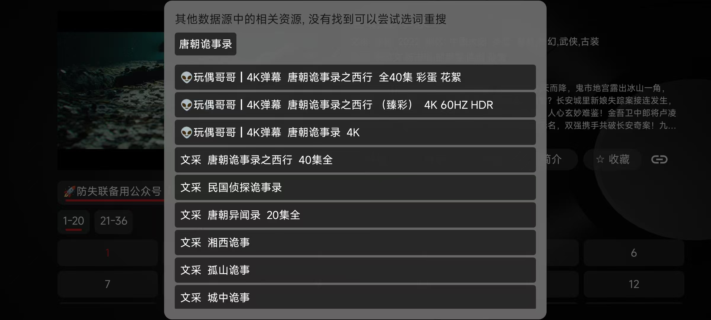
节目的全屏播放界面：全屏播放时，左右滑动可以快进快退，在右半边屏幕上下滑控制音量升高降低，在左半边屏幕上下滑动控制屏幕亮度增加减少，点击屏幕一下可以在下方出现控制栏，控制栏可以选择倍速播放，拖动播放进度等
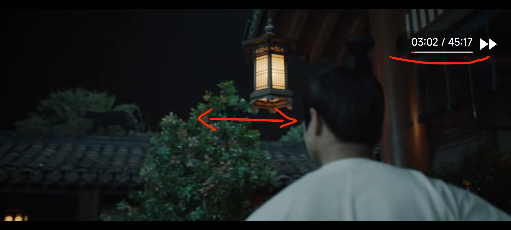
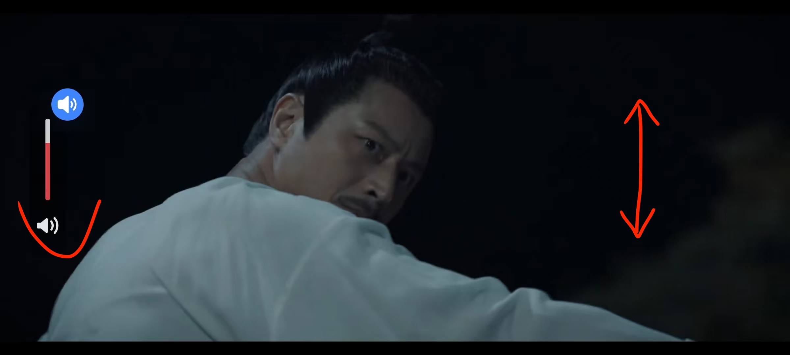
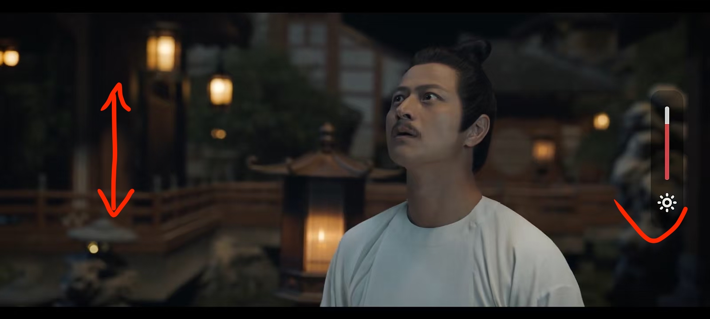
如下截图中，进度条可以直接拖动。按钮1：上一集。2：暂停/播放。3：下一集。4：倍速播放。5：重新加载视频（比如视频出问题了，重新打开的意思）。6：全屏/小屏。7：解码方式，遇到播放问题可以选择“IJK”试试。8：用不上。9：用不上。10：用不上。11：用不上。12：跳过片头，比如看电视剧，每集都有片头，在片头结束时，点下这个按钮，它就从00:00变为当前播放的时间，以后播放其他集时，就会从这个时间开始播放，从而就跳过片头了。注意：要是在电视中间位置不小心按了这个，它每次播放就会从中间开始，遇到这种失误的情况，长按这个按钮，按住不要松，它就会变为00:00。13：用不上（它是跳过片尾，原理和跳过片头是一样的，但不好用，因为电视剧每集长度不一定都一样长，你设置了一个时间，下一集可能就不适合了。）